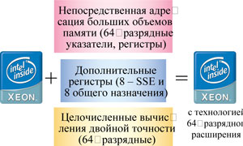
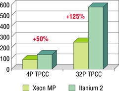

Евгений Рудометов
rudometov@mail.ru
Все более широкое распространение компьютерных технологий порождает огромное количество новых цифровых данных, требующих своевременного преобразования и потребления. Для эффективной обработки огромных потоков информации, среди которой значительную долю составляют мультимедийные файлы, компьютерно-коммуникационная отрасль должна существенно переработать свои аппаратные средства и приложения. При этом потенциал роста функциональности и производительности в будущем будет обеспечиваться не только повышением тактовой частоты, задающей темп работы полупроводниковых элементов, но и внедрением перспективных архитектурных решений.
Производительность процессоров
Будущее компьютерной техники в значительной степени определяется работами, ведущимися сегодня в лабораториях и на производстве. Основным объектом внимания ученых и инженеров, как и ранее, остаются процессоры, важнейший параметр которых - производительность.
Производительность процессоров зависит от технологии их производства, микроархитектуры и тактовой частоты и определяется следующими соотношениями:
Производительность процессора = Команды/Время
Команды/Секунды = (Команды/Такты) х (Такты/секунды)
Параметр Команды/Такты - это количество инструкций, выполняемых за такт, или IPC (Instructions per Cycle), а Такты/секунды - это тактовая частота F, на которой работает ядро процессора.
Величина IPC представляет собой функцию архитектуры процессора и используемого технологического процесса:
IPC = f (архитектура, технологический процесс).
Тактовая же частота F, задающая темп работы процессорного ядра, это функция как технологического процесса, так и конструктивных особенностей внутренних электронных цепей ядра процессора:
F = f (технологический процесс, цепи).
Итак, из приведенных выше соотношений следует, что производительность процессора определяется двумя параметрами - IPC и тактовой частотой F.
От 32 к 64
Если оставить в стороне вопросы технологии и особенности реализации внутренних электронных цепей ядра процессора, то остается зависимость производительности процессора от его архитектурных решений. В это понятие входят многие особенности архитектуры, в частности, разрядность обрабатываемых элементов.
Очевидно, что, чем больше разрядов отводится на команды и данные, тем меньше команд, выполняемых за такт, потребуется для решения поставленных задач. Действительно, для выполнения расчетов, требующих высокой точности, в случае процессоров высокой разрядности необходимо меньше машинных слов для размещения операндов и команд, чем в случае малоразрядных элементов. Это можно было наблюдать при переходе от 4-разрядных процессоров к 8-разрядным, далее - к 16- и, наконец, к 32-разрядным моделям. Остается добавить, что именно 32-разрядные процессоры сегодня доминируют.
Тем не менее на рынке уже несколько лет присутствуют и более сложные решения, ориентированные на данные удвоенной длины. Но до недавнего времени 64-разрядные процессоры предназначались исключительно для серверных решений. Из-за большой стоимости технологических процессов, используемых в их производстве, а также чрезвычайно сложной внутренней структуры 64-разрядных серверных процессоров уровень цен на них сравнительно высок - значительно выше того, что установлен для настольных моделей.
Кроме того, модели процессоров, рассчитанные на данные длиной в 64 разряда, требуют либо нового ПО, специально созданного под конкретные архитектуры, либо перекомпиляции существующих приложений. Добавим, что необходимо и сопутствующее аппаратное обеспечение. Все это создает определенные трудности при внедрении перспективных многоразрядных процессорных архитектур.
Однако благодаря совершенствованию полупроводниковых технологий и внедрению многочисленных архитектурных решений для процессоров не только снижается себестоимость ранее разработанных моделей, но и становится возможным реализовать все более сложные замыслы разработчиков. Среди этих замыслов - и планы разработки и выпуска высокопроизводительных процессоров для рынка ПК большей разрядности. Эта задача становится все более актуальной, поскольку по объективным причинам (рост токов утечки и соответствующее увеличение теплообразования) наращивание частотного потенциала дается все труднее.
Архитектура AMD64
Компания AMD (http://www.amd.com) была первой, кто сумел применить возможности современных полупроводниковых технологий для выпуска массовых 64-разрядных процессоров для сегмента настольных компьютеров. Развивая архитектуру 32-разрядных процессоров AMD Athlon, разработчики AMD создали процессоры, поддерживающие 64-разрядные вычисления, - эта архитектура получила наименование AMD64. В качестве прототипа новой разработки была выбрана архитектура процессоров AMD Athlon XP.
Впервые нововведения, обеспечивающие поддержку 64-разрядных вычислений, были опробованы в серверных решениях. Соответствующие процессоры получили наименование AMD Opteron и были благосклонно приняты компьютерным рынком. Более того, ряд известных производителей объявили о выпуске систем, основанных на этих процессорах.
Однако наибольшую известность модели с архитектурой AMD64 приобрели в сегменте настольных компьютеров. Эти модели получили наименование AMD Athlon 64; основой для их разработки послужили серверные AMD Opteron.
Основное отличие новых настольных процессоров от предшественников, AMD Athlon XP, заключается в том, что они поддерживают не только 32-, но и 64-разрядный код при сохранении полной совместимости с существующими программными приложениями. Это позволяет плавно перейти от 32- к 64-разрядному ПО, а также обеспечить совместимость со следующим поколением ОС Microsoft Windows XP для 64-разрядных платформ.
Оценивая прикладное значение новой архитектуры, следует отметить, что аппаратная реализация 64-разрядных команд позволяет увеличить производительность при обработке данных соответствующей длины. Кроме того, 64-разрядный режим обеспечивает расширение адресного пространства. Однако необходимо помнить, что для использования потенциала расширенной архитектуры требуется соответствующее ПО, поддерживающее 64-разрядный режим. В противном случае преимущества аппаратных расширений теряются.
Для реализации возможностей архитектуры, ориентированной на 64-разрядные вычисления, разработчики AMD удвоили количество регистров общего назначения и увеличили их разрядность до 64 бит. Кроме того, в числе принципиальных усовершенствований архитектуры процессоров AMD Athlon 64 необходимо отметить следующие:
- интегрированный контроллер памяти, ранее присутствовавший исключительно в микросхемах северного моста;
- шина HyperTransport для связи с набором микросхем, увеличивающая пропускную способность и сокращающая задержки при передаче данных;
- удлиненные конвейеры целочисленных вычислений (до 12 ступеней) и вещественных вычислений (до 17 ступеней), что позволяет увеличить тактовые частоты;
- увеличенный объем кэш-памяти второго уровня;
- поддержка набора инструкций SSE2;
- поддержка технологии Cool-n-Quiet, обеспечивающей энергосбережение и пониженное тепловыделение;
- усовершенствованная защита от вирусов (блокирование переполнения буфера);
- эффективное выполнение 32-разрядных приложений.
Из конструктивных особенностей следует отметить появление крышки, защищающей кристалл процессора, в состав которого включена улучшенная цепь температурной защиты.
Процессоры AMD Athlon 64 выпускаются по технологии 0,13 мкм и содержат в составе ядра более 100 млн транзисторов. Эта линейка имеет разъем Socket 754. Модули микросхем памяти DDR2 PC3200/2700/2100/1600 (до четырех модулей registered или трех модулей unbuffered DIMM) подключаются посредством 64-разрядной шины (плюс 8 разрядов ECC) с пропускной способностью до 3,2 Гбайт/с. Для подключения самого процессора служит шина HyperTransport (полнодуплексная, до 1600 МГц) с пропускной способностью 6,4 Гбайт/с. Объем кэш-памяти L1 - 128 Кбайт, объем же кэш-памяти L2 зависит от модели. Так, у моделей с рейтингом 3400+ (тактовая частота ядра 2,2 ГГц) и 3200+ (2,0 ГГц) объем кэш-памяти L2 составляет 1024 Кбайт, у модели 3000+ (2,0 ГГц) - 512 Кбайт.
На основе архитектуры AMD64 создана флагманская модель процессора, получившая наименование AMD Athlon 64 FX. Она отличается от AMD Athlon 64 прежде всего использованием двухканальной подсистемы памяти. В результате registered (специальные) модули памяти DDR2 PC3200/2700/2100/1600 подключаются посредством 128-разрядной шины (плюс 16 разрядов ECC). Это обеспечивает для подсистемы памяти полосу пропускания до 6,4 Гбайт/с.
В качестве разъема для этой линейки процессоров первоначально был выбран Socket 940, совпадающий с разъемом серверных решений, однако в настоящее время идет замена его на Socket 939. Двухканальность подсистемы памяти сохраняется, но используются уже обычные стандартные модули памяти DDR400, что облегчает их интеграцию в системы, предназначенные для настольных компьютеров.
Архитектура Intel EM64T
Тенденцию перехода к разработке и выпуску процессоров гибридной архитектуры поддержала корпорация Intel (http://www.intel.com). Об этом впервые объявил весной нынешнего года на Форуме IDF в Сан-Франциско Крейг Барретт, CEO корпорации Intel.
Выступая на IDF, в числе многочисленных перспективных разработок корпорации г-н Барретт отметил планируемую поддержку 64-разрядных инструкций 32-разрядными процессорами. Эта архитектура, первоначально названная IA-32e, получила в дальнейшем наименование технология EM64T (Extended Memory 64 Technology).
Говоря об этой новой для процессоров Intel архитектуре, Крейг Барретт подчеркнул, что на начальном этапе речь идет только о рынке серверов и мощных рабочих станций. Технология поддержки 64-разрядных вычислений, расширяющих возможности архитектуры IA-32, для этого сегмента будет реализована уже в 2004 г. Объектом ее приложения станут следующие поколения серверных процессоров Intel Xeon. В дальнейшем же, по мере расширения рынка ПО, ориентированного на 64-разрядные вычисления и представленного соответствующими вариантами ОС и приложений, такая поддержка появится и в процессорах для компьютеров настольного уровня, среди которых доминируют 32-разрядные (табл. 1).
Таблица 1. Высокопроизводительные процессоры Intel
| Процессор | Технология | Тактовая частота, ГГц | Кэш-память | Другие параметры | Назначение |
| Intel Itanium 2, 64-разрядный | 130 нм | 1,3/1,4/1,5 (MP) 1,4/1,6 (DP) |
L3 - 3/4/6 Мбайт (MP); 1,5/3 Мбайт (DP) L2 - 256 Кбайт L1 - 32 Кбайт |
64-разрядная адресация; 128 INT + 128 FP регистров; 128-разрядная FSB, 400 МГц; до 512 процессоров | Серверы Back-end |
| Intel Xeon, 32-разрядный | 130 нм | До 3,4 | L3 - до 4 Мбайт | До 4 процессоров | Серверы Mid/Back-end |
| Intel Pentium 4 Extreme Edition, 32-разрядный | 130 нм | 3,2-3,4 | L3 - 2 Мбайт$L2 - 512 Кбайт | Технология Hyper-Threading; микроархитектура NetBurst; FSB 800 МГц | Настольные ПК для дома и офиса |
| Intel Pentium 4, 32-разрядный | 130 нм (ядро Northwood) | 2,4-3,4 | L2 - 512 Кбайт | Технология Hyper-Threading; микроархитектура NetBurst; FSB 533/800 МГц | Настольные ПК для дома и офиса |
| 90 нм (ядро Prescott) | 2,8-3,4 | L2 - 1 Mбайт | |||
| Intel Pentium M, 32-разрядный | 130 нм (ядро Banias) | 1,3-1,7 | L2 - 1 Mбайт | FSB 400 МГц | Мобильные ПК |
| 90 нм (ядро Dothan) | 1,7-2,0 | L2 - 2 Mбайт |
Необходимо отметить, что и г-н Барретт, и последующие докладчики, и специалисты, участвовавшие в открытых круглых столах, подчеркивали, что архитектура IA-32e, реализующая 64-разрядные команды, не копирует уже существующие разработки AMD. Более того, неоднократно отмечалось, что сама система команд, получившая наименование x86-64, не является собственностью фирмы-конкурента. Кроме того, архитектуры процессоров, представленных обоими крупнейшими производителями, различны и имеют свои специфические особенности. Эти особенности найдут соответствующее воплощение и в 32-, и в 64-разрядных наборах команд (примерно так, как это было сделано в MMX, SSE, SSE2, SSE3 и т. п.). Однако во многих командах совместимость будет присутствовать.
Различия в изделиях от Intel и AMD будут связаны в основном с разными архитектурами, разными подходами к проектированию процессоров, разными полупроводниковыми технологиями, применяемыми в производстве. В качестве примера уникальных особенностей можно привести технологию Hyper-Threading (HT) и набор команд SSE3, реализованные в продукции Intel и отсутствующие пока у конкурента даже в виде аналогов. В ближайшее время Intel планирует реализовать и другие инновации, к примеру, технологии LaGrande, Vanderpool и Foxton. Со своей стороны, AMD использует в своих процессорах ряд собственных уникальных разработок, например, 3DNow!, не имеющих аналогов в изделиях Intel.
Тем не менее, несмотря на возможные отличия в реализации технологий 64-разрядных вычислений на базе 32-разрядных процессоров, как рассказал выступивший на IDF CEO Microsoft Стив Балмер, готова бета-версия соответствующей ОС, поддерживающей 64-разрядные расширения команд. По мнению специалистов Microsoft, реализация новых команд позволит повысить производительность и точность некоторых вычислений.
Первым процессором Intel с поддержкой 64-разрядных команд станет 32-разрядный Intel Xeon на основе ядра Nocona, выпускаемый по технологии 90 нм, - об этом сообщил на IDF Майкл Фистер, старший вице-президент и генеральный менеджер подразделения Intel Enterprise Platforms Group. Ядро младшей модели этого процессора, имеющей кэш-память 1 Мбайт и рассчитанной на шину 800 МГц, будет работать на частоте 3,6 ГГц. В дальнейшем по мере перехода на полупроводниковый технологический процесс 90 нм будут выпущены более производительные варианты на основе ядра Prescott.
На этом пути будет много производственных трудностей, связанных с масштабом литографии. В настоящее время разработчики оперируют элементами, размеры которых исчисляются уже нанометрами. К сожалению, новейшие технологии выпуска процессоров, обеспечивающие уменьшение масштаба литографии и увеличение числа транзисторов на полупроводниковых кристаллах, сопровождаются и рядом осложнений. К таким негативным явлениям относятся значительный рост токов утечки и соответствующее увеличение теплообразования. Однако, по убеждению руководителей Intel, все эти проблемы будут успешно решены. В подтверждение этому на сайте Intel задолго до выпуска соответствующих моделей процессоров появился документ, описывающий технологию 64-разрядного расширения архитектуры 32-разрядных процессоров, - Extended Memory 64 Technology.
Особенности EM64T
Технология 64-разрядного расширения представляет собой расширение 32-разрядной архитектуры, включающее новые режимы работы и новые расширенные инструкции, что увеличивает функциональные возможности процессоров (рис. 1). Новые 32-разрядные процессоры с поддержкой 64-разрядного расширения совместимы с существующим ПО. Они рассчитаны на поддержку как 32-разрядной адресации, так и 64-разрядной прямой адресации больших объемов оперативной памяти.
|  | Рис. 1. Эволюция архитектуры IA-32.
|
Процессор с реализацией 64-разрядного расширения полностью поддерживает все существующие особенности IA-32. В дополнение к ним вводится новый рабочий режим, получивший наименование IA-32e. Этот режим (mode) включает два подрежима (sub-modes) - режим совместимости и 64-разрядный режим.
Традиционный режим IA-32 позволяет процессору работать в защищенном режиме, в режиме реальной адресации, режиме виртуальных 8086.
Режим IA-32e используется только в среде 64-разрядной ОС и позволяет реализовать средства и преимущества технологии 64-разрядного расширения. В табл. 2 приведены основные характеристики поддерживаемых подрежимов IA-32е и отличия между ними.
Таблица 2. Особенности режима IA-32e
| Подрежим | Адрес (Default) | Операнд (Default) | Регистровое расширение | GPR, бит | ОС | Перекомпиляция |
| 64-разрядный | 64 | 32 | Да | 64 | 64-разрядная | Да |
| Совместимый | 32 | 32 | Нет | 32 | Нет | |
| 16 | 16 | 16, 8 |
Режим совместимости
Подрежим совместимости в IA-32e, доступный 64-разрядной операционной системе, создан для эксплуатации существующего наследия немодифицированного 32-разрядного ПО.
Режим совместимости позволяет запускать 16- и 32-разрядные приложения под управлением 64-разрядной ОС без перекомпиляции. Тем не менее приложения, которые запускаются в виртуальном режиме 8086, не будут работать. Как и 64-разрядный, режим совместимости должен поддерживаться операционной системой. Это, в частности, означает, что 64-разрядные приложения могут работать одновременно с неперекомпилированными 32-разрядными, запускаемыми в режиме совместимости.
64-разрядный режим
Второй подрежим в IA-32e, названный 64-разрядным, доступен 64-разрядной ОС, обеспечивающей работу приложений, написанных специально под 64-разрядную адресацию пространства памяти.
Для реализации 64-разрядного режима архитектура была модифицирована следующим образом (см. также табл. 3):
- введены цепи поддержки 64-разрядной линейной адресации;
- регистровые расширения доступны через установку нового префикса кода команд (REX);
- существующие регистры GPR расширены до 64-разрядных (RAX, RBX, RCX, RDX, RSI, RDI, RBP, RSP);
- появилось восемь новых регистров общего назначения - GPR (general-purpose register) (R8-R15);
- появилось восемь новых 128-разрядных регистров для потоковых команд SIMD-расширений (XMM8-XMM15);
- 64-разрядный счетчик команд (RIP);
- новый режим относительной адресации (RIP - relative data addressing);
- можно использовать пространство плоской адресации одной командой;
- появились расширенные и новые команды;
- физическая адресация поддерживает более 64 Гбайт (зависит от особенностей реализации);
- новый механизм контроля очередей прерываний.
Таблица 3. Регистры в процессорах с технологией 64-разрядного расширения
| Программно-доступные регистры | 64-разрядный режим | Режимы обычный и совместимый | ||||
| Имя | Число | Размер, разрядов | Имя | Число | Размер, разрядов | |
| Регистры общего назначения | RAX, RBX, RCX, RDX, RBP, RSI, RDI, RSP, R8-15 | 16 | 64 | EAX, EBX, ECX, EDX, EBP, ESI, EDI, ESP | 8 | 32 |
| Указатель инструкций | RIP | 1 | 64 | EIP | 1 | 32 |
| Флаги | EFLAGS | 1 | 32 | EFLAGS | 1 | 32 |
| FP-регистры | ST0-7 | 8 | 80 | STO-7 | 8 | 80 |
| Мультимедиа-регистры | MM0-7 | 8 | 64 | MM0-7 | 8 | 64 |
| Потоковые SIMD | XMM0-15 | 16 | 128 | XMM0-7 | 8 | 128 |
| Размер стека | - | - | 64 | - | - | 16 или 32 |
Развитие экосистемы EM64T
Корпорация Intel работает с ключевыми участниками рынка для поддержки технологии 64-разрядного расширения в их решениях. Эта технология совместима с ОС Microsoft Windows Server 2003 и Windows XP Professional. Бета-версия системы уже доступна от Microsoft (NDA); Microsoft Server 2003 SP1 RTM ожидается в III квартале 2004 г.
Поступили первые заявления производителей аппаратного обеспечения о поддержке технологии 64-разрядного расширения. Идет тестирование разработанных платформ и соответствующих драйверов.
Производительность
В случае AMD Athlon 64 программы в 64-разрядном режиме выполняются медленнее, чем в 32-разрядном (напомним, что существуют три режима работы: 32, 32/64, 64-разрядный). В режимах 32/64 и 64 существенного прироста ни в играх, ни в существующих задачах в процессорах AMD Athlon 64 не наблюдается. Более того, в режиме 64, как правило, имеет место значительное падение. Прирост же в традиционном режиме объясняется отработанностью архитектуры процессоров Athlon. Остается поаплодировать инженерам AMD, которые благодаря команде NexGen научились делать эффективные исполнительные блоки.
Но это не означает, что архитектура Athlon 64 плоха, - вовсе нет. Инженерам AMD удалось создать эффективные 32-разрядные узлы, в чем можно убедиться на основе многочисленных тестирований систем, созданных на основе процессоров AMD Athlon 64. Но при чем здесь 64-разрядные команды...
Скромные результаты тестирования, показываемые процессорами AMD в 64-разрядных вычислениях, объясняются разными причинами. Одна из них, вероятно, связана с тем, что принципиально трудно сделать ALU64 настолько эффективным, чтобы его быстродействие было выше традиционного 32-разрядного, по крайней мере в настоящее время.
Кстати, именно поэтому Intel Itanium 2 ненамного быстрее Intel Xeon (рис. 2). Здесь следует напомнить, что достоинства архитектуры Intel Itanium - не только в скорости обработки данных, но и в устойчивости и надежности. Кроме того, архитектура Intel Itanium 2 позволяет объединять большое число этих процессоров, не прибегая к сложной системе кластерных решений.
|  | Рис. 2. Сравнение производительности традиционных серверных многопроцессорных платформ.
|
Что касается тестирования соответствующих процессоров от Intel, то для этого придется подождать появления на рынке соответствующих моделей. Тогда же можно будет и сравнить результаты реализации фирменных решений от обоих производителей.
Возвращаясь к проблеме востребованности 64-разрядных команд в архитектуре 32-разрядных процессоров, отметим, что, по мнению большинства специалистов, эти команды необходимы прежде всего для обеспечения прямой адресации оперативной памяти значительного объема, превышающего максимальный уровень для традиционных процессоров. Это означает, что рост производительности в новых режимах пользователи почувствуют в основном тогда, когда им понадобятся системы с очень большим объемом памяти (например, удвоенным). В таких случаях заметная часть программ, по крайней мере треть, будут расположены по адресам, недоступным для прямой адресации в традиционном режиме 32-разрядных процессоров.
Целесообразность использования 64-разрядной адресации для работы с большими объемами оперативной памяти не вызывает сомнения. В дальнейшем появятся специально разработанные приложения, способные использовать новые особенности 32-разрядных процессоров. Но это в будущем. Сегодняшние же агитационные призывы - это в большинстве своем чистые маркетинговые ходы, направленные на тех, кто не слишком разбирается в вопросах архитектуры процессоров и не использует объективные источники информации.